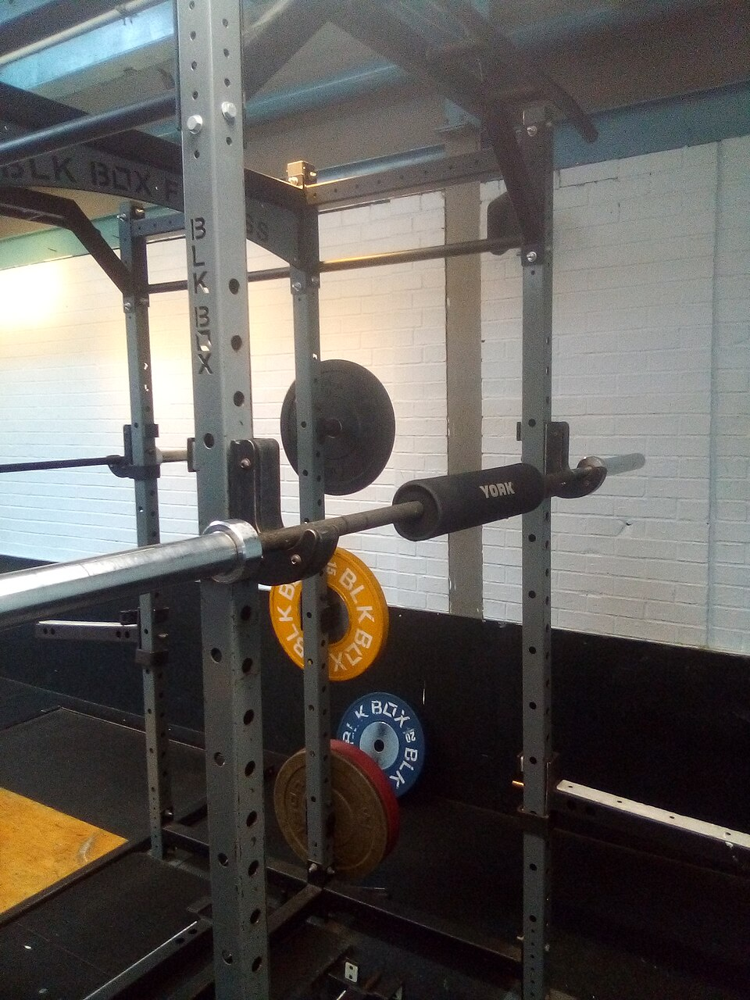
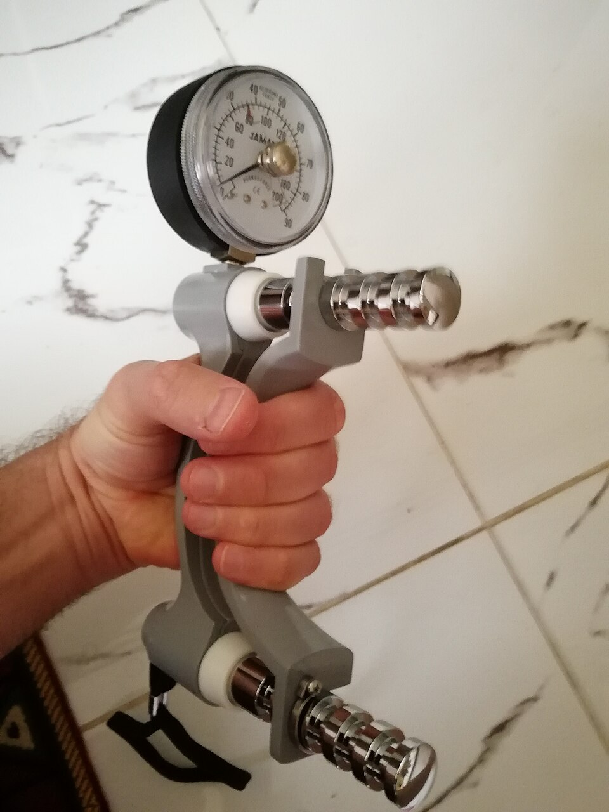

Handball Games vs. High-Intensity Interval Training for Better Health
The researchers tested aerobic fitness (how long you can keep going) and muscle strength. Both training groups improved much more than the control group (Han et al., 2026).
| Fitness Measure | SSG | HIIT |
|---|---|---|
| 20-meter shuttle run (meters more than control group) | +184.67 | +197.33 |
| VO2max (ml/kg/min more than control group) | +6.99 | +7.55 |
| Leg strength (1RM), men | +14.3% | +12.3% |
| Leg strength (1RM), women | +15.6% | +13.6% |
Shuttle run and VO2max numbers show how much better each group did compared to the control group (Han et al., 2026).
The 20-meter shuttle run is a test where you run back and forth between two lines while the beeps get faster and faster. Both groups ran much farther after training. HIIT had a slightly bigger improvement, but the difference between HIIT and SSG was not statistically significant (Han et al., 2026). The researchers think HIIT may have a small edge because every sprint is controlled, while the effort in a game changes from moment to moment. A review of many studies also found that both HIIT and small-sided games improve endurance (Kunz et al., 2019).

Leg strength went up in both groups. The SSG group gained a little more, which may be because handball includes jump shots, quick changes of direction, and fast starts that put a big load on the legs (Han et al., 2026).

Grip strength was measured by squeezing a device called a hand dynamometer. The authors expected handball to help grip strength because players catch, pass, and throw the ball. However, the study did not find a meaningful improvement in grip strength in either group. The authors explain that the training mostly worked the legs, not the hands and arms (Han et al., 2026).